Modern Masters 제품을 이해하려면 먼저 기본 용어부터 알아야 합니다. 페인팅에서 반복적으로 등장하는 개념들을 정리했습니다.
페인트를 칠하기 전에 표면에 먼저 바르는 "밑칠" 제품입니다. 페인트가 표면에 잘 붙도록 접착력을 높이고, 건조 속도를 빠르게 해주며, 마르면 바로 샌딩(사포질)이 가능하게 해줍니다. 집을 지을 때 기초 공사를 하듯, 프라이머는 페인팅의 기초입니다.
페인트를 다 칠한 뒤 마지막에 바르는 "보호막" 제품입니다. 투명한 코팅을 올려서 페인트가 긁히거나 벗겨지는 것을 방지하고, UV(자외선) 차단, 방수, 내구성을 부여합니다. 스마트폰 액정 보호 필름과 비슷한 역할입니다.
페인트의 건조 시간을 늘려주는 "지연제"입니다. 페인트가 너무 빨리 마르면 자연스러운 패턴이나 효과를 내기 어렵기 때문에, 글레이즈를 섞어서 작업 시간을 확보합니다. 마르면 투명해집니다. 셀로판지와 비슷한 개념입니다.
넓고 납작한 금속 도구로, 플라스터(회반죽)를 벽에 펴 바르거나 눌러서 광을 낼 때 사용합니다. 빵칼처럼 생겼지만 용도가 완전히 다릅니다. 바르는 각도(15°, 30°, 60° 등)에 따라 효과가 달라집니다.
페인트가 밑 색을 얼마나 덮는지를 나타내는 정도입니다. Opaque = 완전히 덮음 / Semi-Opaque = 반쯤 덮음 / Sheer = 거의 투명하게 비침. 커버력이 높다 = 적은 횟수로 덮을 수 있다는 뜻입니다.
페인트를 한 번 바르는 행위를 "1코트(1 coat)"라고 합니다. "2회 도포" = 한 번 바르고, 건조 후 한 번 더 바르는 것입니다. 횟수가 많을수록 색이 진해지고 커버력이 올라갑니다.
물로 희석하고 물로 도구를 씻을 수 있는 페인트입니다. 냄새가 적고 건조가 빠르며 환경에 좋습니다. Modern Masters 제품은 대부분 수성입니다. 반대말은 "유성(Oil-based)"입니다.
페인트가 마른 후 표면의 반짝임 정도입니다. 낮은 순서부터: Matte(무광) → Satin(반광) → Semi-Gloss(반윤광) → Gloss(유광). 광이 높을수록 반짝이고, 낮을수록 차분합니다.
금속이 공기·수분과 반응하여 녹이 스는 것을 말합니다. 부식 페인트는 이 자연스러운 녹 효과를 인위적으로 연출하는 특수 페인트입니다.
흰색 또는 투명한 베이스 제품에 안료(색소)를 넣어 원하는 색상을 만드는 과정입니다. 페인트 가게에서 색을 맞추는 것과 같은 원리입니다.
"15~20회배"라고 하면, 1갤런(약 3.78L)으로 약 15~20㎡를 칠할 수 있다는 뜻입니다. 실제로는 표면 상태, 도포 두께에 따라 달라집니다.
Modern Masters의 대표 제품군으로, 금속 가루와 진주 안료를 사용한 수성 메탈릭 페인트입니다. 벽면에 진짜 금속 같은 광택과 질감을 연출할 수 있습니다. 내부용과 외부용으로 나뉘며, 용도에 따라 프라이머·마감재 조합이 달라집니다.
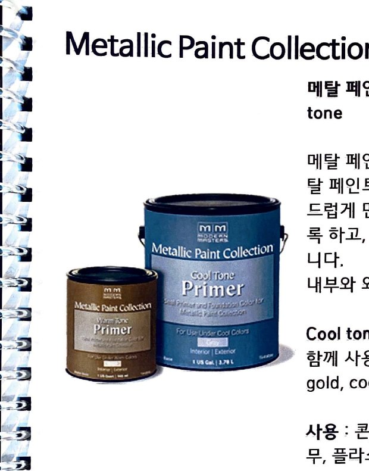
메탈릭 페인트를 칠하기 전에 반드시 전용 프라이머를 먼저 바릅니다. 일반 프라이머가 아닌, 이 제품 전용으로 출시된 프라이머입니다.
① 표면의 접착력을 높여서 메탈 페인트가 잘 붙게 합니다. ② 페인트의 건조 속도를 빠르게 합니다. ③ 마르면 바로 샌딩(사포질)이 가능해집니다. ④ 페인트가 부드럽게 발리도록 표면을 균일하게 만들어줍니다.
| 구분 | Cool Tone 프라이머 | Warm Tone 프라이머 |
|---|---|---|
| 프라이머 색상 | Gray(회색) 계열 | Beige(베이지) 계열 |
| 함께 쓰는 페인트 | Silver, Pewter 등 차가운 색 | Gold, Copper 등 따뜻한 색 |
| 선택 기준 | 은색·회색 계열 메탈릭을 칠할 때 | 금색·동색 계열 메탈릭을 칠할 때 |
콘크리트, 석조, 비철금속, 아연철판, 벽, 나무, 플라스터, 스타코 위에 사용 가능합니다. 내부와 외부 모두 사용할 수 있습니다.
도구: 브러시, 롤러, 스프레이 건
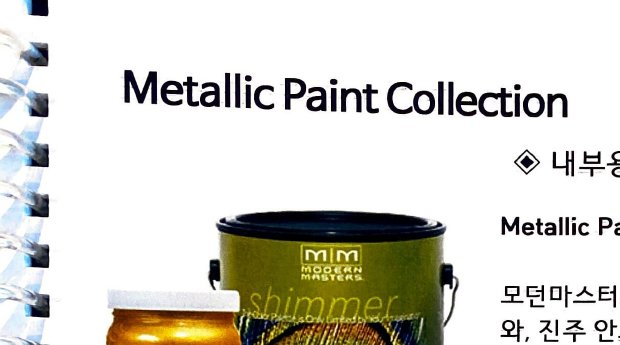
Modern Masters의 메인 제품입니다. 메탈 가루, 진주 안료, 전통 색소 안료를 조합한 수성 페인트로, 뛰어난 색감과 광채를 자랑합니다.
Sheer 5가지를 포함하여 약 43가지 색상으로 출시되었습니다.
Satin이란 "반광"을 뜻합니다. 너무 번쩍이지 않으면서도 은은한 금속 광택을 냅니다.
도구: 브러시, 롤러, 스프레이건
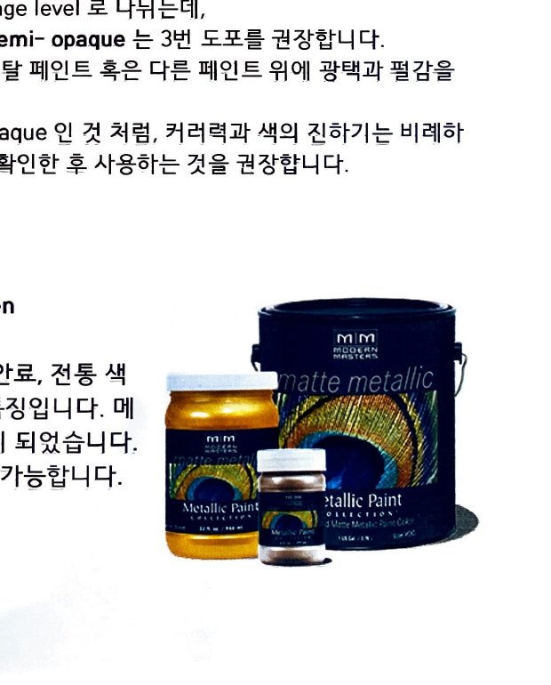
Satin 광과 같은 메탈 가루, 진주안료, 전통 색소를 사용하지만 광채가 없는 것이 특징입니다. 메탈 페인트의 인기 있는 10가지 색상으로 출시되었습니다.
Satin 광과 함께 연출하면 멋진 월 페인팅(벽면 장식 페인팅)이 가능합니다.
도구: 브러시, 롤러, 스프레이건
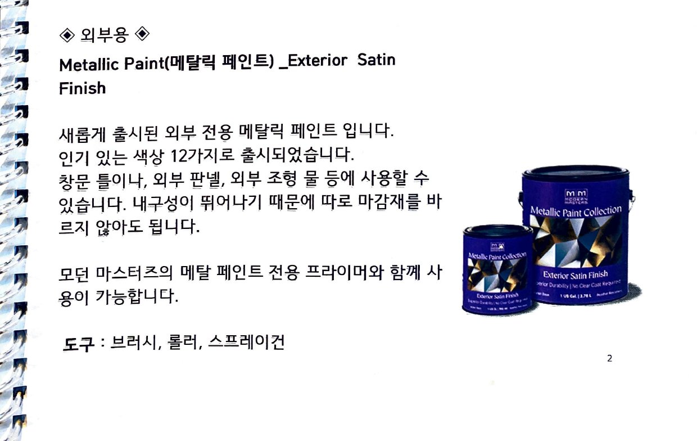
새롭게 출시된 외부 전용 메탈릭 페인트입니다. 인기 있는 색상 12가지로 출시되었습니다.
창문 틀이나 외부 판넬, 외부 조형물 등에 사용할 수 있습니다.
강한 내구성과 UV 차단력을 갖추었기 때문에 별도의 마감재를 바르지 않아도 됩니다.
모던 마스터즈의 메탈 페인트 전용 프라이머와 함께 사용합니다.
도구: 브러시, 롤러, 스프레이건
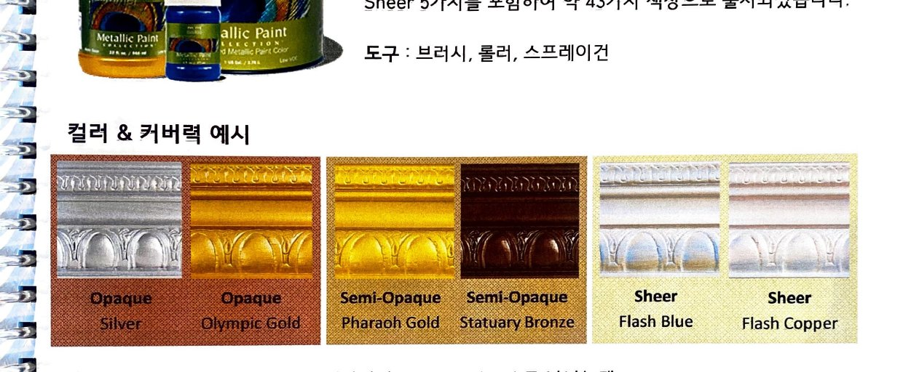
메탈릭 페인트의 43가지 색상은 세 가지 커버력 레벨로 나뉩니다. 라벨을 반드시 확인하고 그에 맞게 도포 횟수를 정해야 합니다.
| 레벨 | 특징 | 권장 도포 횟수 | 대표 색상 |
|---|---|---|---|
| Opaque | 완전 불투명, 밑 색을 완전히 덮음 | 2회 | Silver, Olympic Gold |
| Semi-Opaque | 반투명, 밑 색이 약간 비침 | 3회 | Pharaoh Gold, Statuary Bronze |
| Sheer | 투명에 가까움, 밑 색 위에 광택·펄감만 추가 | 용도에 따라 | Flash Blue, Flash Copper |
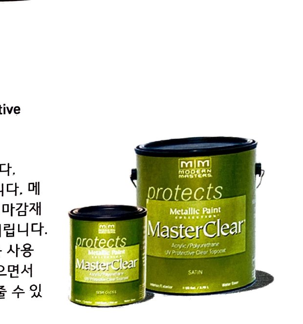
메탈 페인트 전용으로 출시된 마감재입니다. Satin과 Semi-Gloss 2가지 광도가 있습니다.
왜 전용 마감재를 써야 하나? 일반 마감재를 사용하면 메탈 페인트 특유의 광채를 잃어버립니다. 모던 마스터즈의 전용 마감재를 사용하면 메탈 페인트 고유의 광채를 잃지 않으면서도 강한 내구성과 자외선 차단 효과를 줄 수 있습니다.
도구: 브러시, 롤러, 스프레이 건
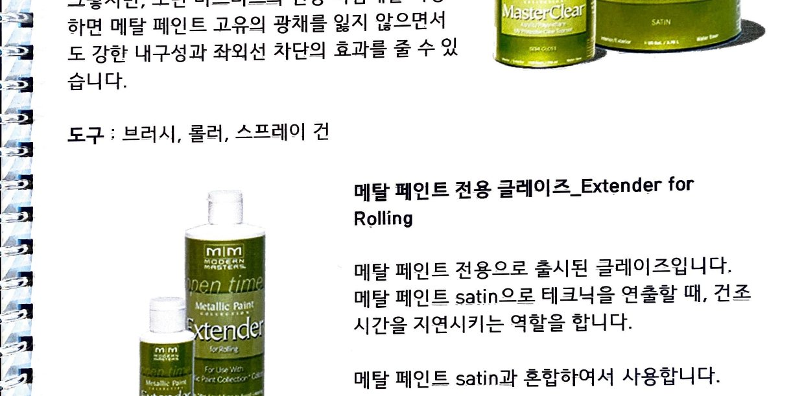
메탈 페인트 전용으로 출시된 글레이즈입니다. 메탈 페인트 Satin으로 테크닉을 연출할 때, 건조 시간을 지연시키는 역할을 합니다. 메탈 페인트 Satin과 혼합하여 사용합니다.
도구: 브러시, 롤러
메탈 페인트는 일반 롤러가 아닌 모(털)가 긴 전용 롤러를 사용합니다. 전용 롤러를 사용하면 실크 같은 느낌이 나도록 메탈 페인트를 바를 수 있습니다.
사용 장소(외부/내부)와 페인트 광도(Satin/Matte)에 따라 시공 순서가 다릅니다.
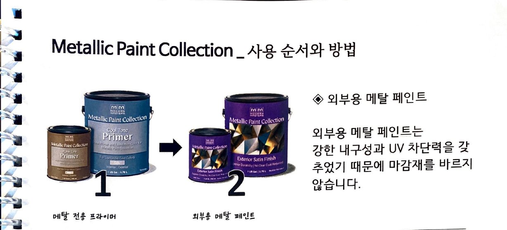
외부용 메탈 페인트는 강한 내구성과 UV 차단력을 갖추었기 때문에 마감재를 바르지 않습니다.
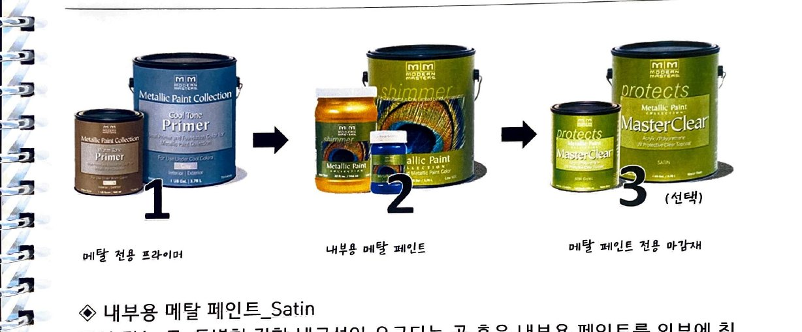
마감재는 선택사항이지만, 물이 닿는 곳이나 강한 내구성이 요구되는 곳에는 전용 마감재를 사용하여 마감합니다. 내부용 페인트를 외부에 칠할 경우에도 반드시 마감재를 사용합니다.
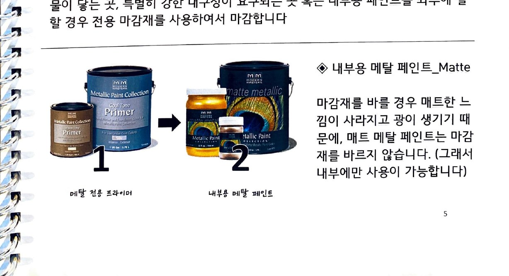
Matte는 마감재를 바르면 매트한 느낌이 사라지고 광이 생기기 때문에 마감재를 바르지 않습니다. 내부에만 사용이 가능합니다.
진짜 금속 가루가 들어있는 특수 페인트입니다. 부식액(Activator/Patina)과 함께 사용하면 표면에서 실제 화학 반응이 일어나, 자연스러운 녹·부식 효과를 연출할 수 있습니다. 철 부식(녹슨 철), 동 부식(녹슨 구리), 청동 부식(녹슨 청동) 세 가지가 있습니다.
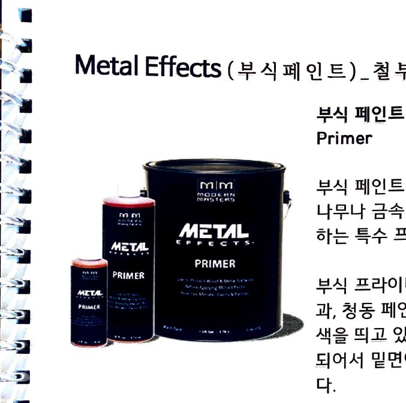
부식 페인트 전용으로 출시된 프라이머입니다. 나무나 금속 표면에 부식 현상이 닿는 것을 방지하는 특수 프라이머입니다.
도구: 브러시, 롤러, 스프레이 건
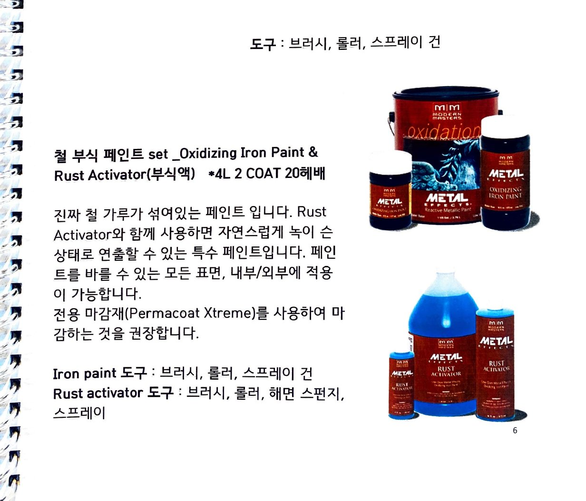
진짜 철 가루가 섞여있는 페인트입니다. Rust Activator와 함께 사용하면 자연스럽게 녹이 슨 상태로 연출할 수 있는 특수 페인트입니다.
페인트를 바를 수 있는 모든 표면, 내부/외부에 적용이 가능합니다.
*4L 2coat 기준 약 20회배 도포 가능
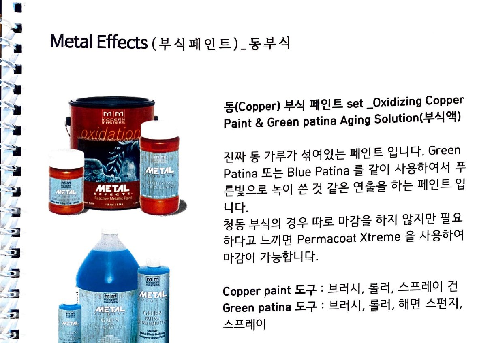
진짜 동(구리) 가루가 섞여있는 페인트입니다. Green Patina 또는 Blue Patina를 같이 사용하여 푸른빛으로 녹이 쓴 것 같은 연출을 하는 페인트입니다.
청동 부식의 경우 따로 마감을 하지 않지만, 필요하다고 느끼면 Permacoat Xtreme을 사용하여 마감이 가능합니다.
Copper Paint 도구: 브러시, 롤러, 스프레이 건
Green Patina 도구: 브러시, 롤러, 해면 스펀지, 스프레이
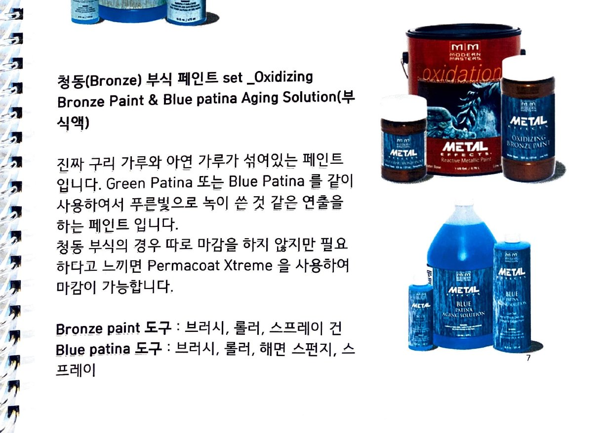
진짜 구리 가루와 아연 가루가 섞여있는 페인트입니다. Green Patina 또는 Blue Patina를 같이 사용하여 푸른빛으로 녹이 쓴 것 같은 연출을 합니다.
청동 부식의 경우 따로 마감을 하지 않지만, 필요하다고 느끼면 Permacoat Xtreme을 사용하여 마감이 가능합니다.
Bronze Paint 도구: 브러시, 롤러, 스프레이 건
Blue Patina 도구: 브러시, 롤러, 해면 스펀지, 스프레이
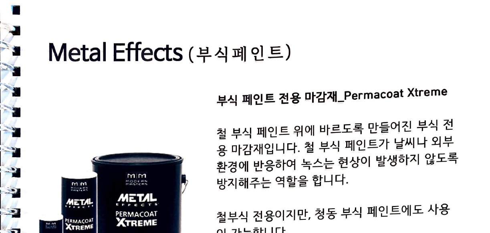
철 부식 페인트 위에 바르도록 만들어진 부식 전용 마감재입니다. 철 부식 페인트가 날씨나 외부 환경에 반응하여 녹스는 현상이 발생하지 않도록 방지해줍니다.
철부식 전용이지만, 청동 부식 페인트에도 사용이 가능합니다.
도구: 브러시, 롤러, 스프레이 건
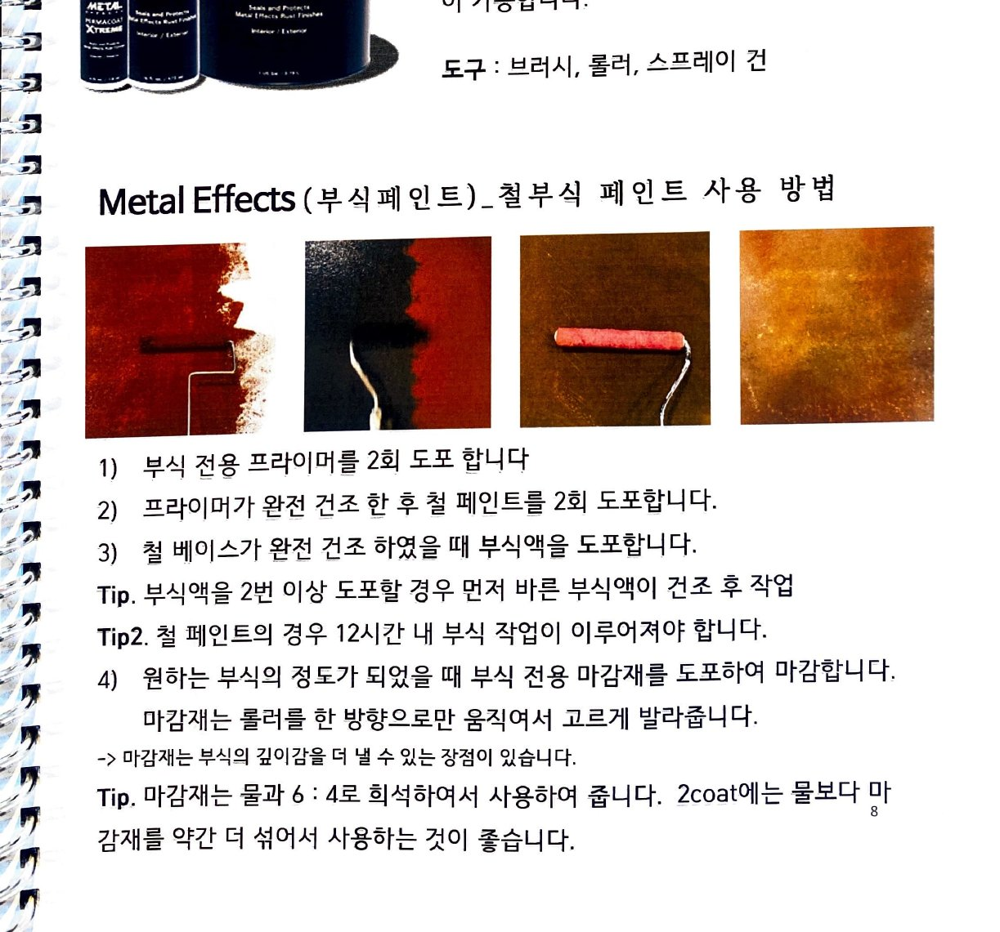
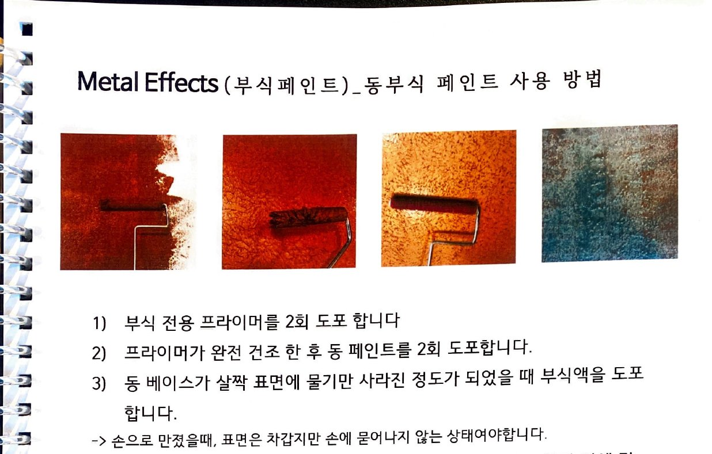
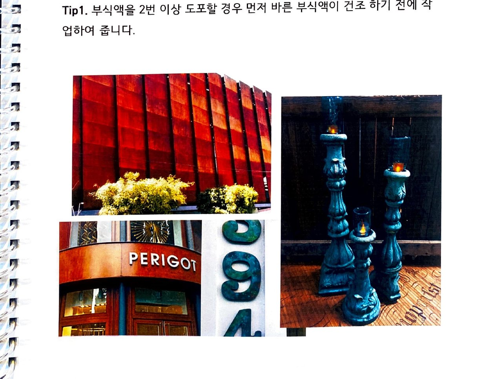
이탈리아 전통 기법에서 유래한 벽면 마감 기법입니다. 여러 겹을 트라월로 바르고 연마하여 대리석처럼 깊이감 있고 매끄러운 벽면을 만듭니다. Modern Masters의 베네티안 플라스터는 직접 안료를 조색하여 원하는 색을 만들 수 있는 것이 특징입니다.
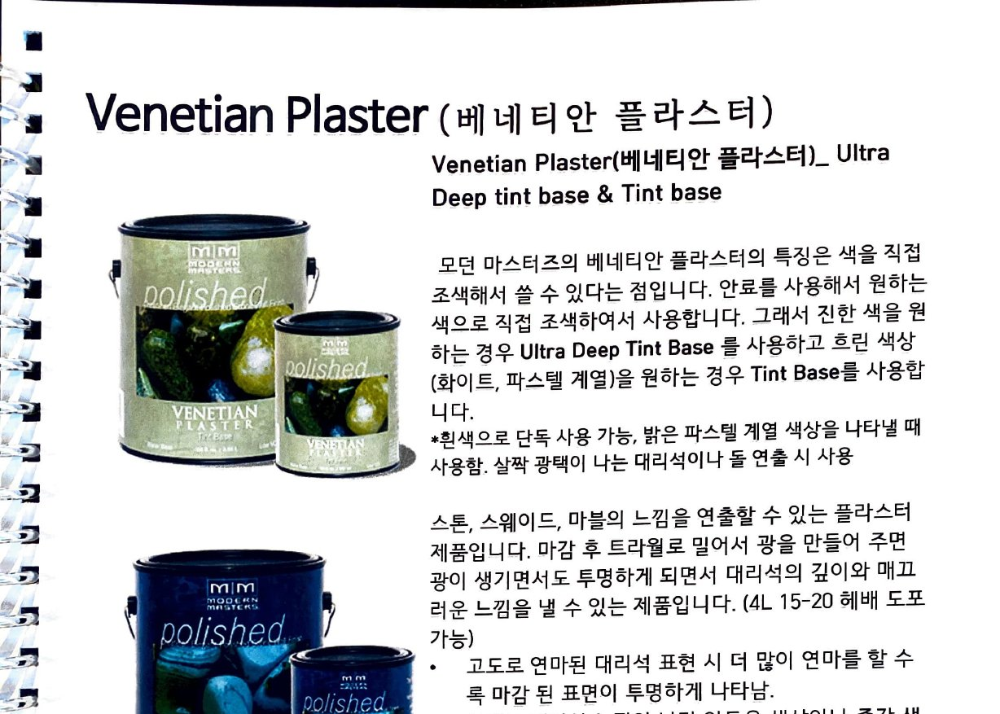
모던 마스터즈의 베네티안 플라스터의 특징은 색을 직접 조색해서 쓸 수 있다는 점입니다. 안료를 사용해서 원하는 색으로 직접 조색하여 사용합니다.
| 베이스 종류 | 용도 | 사용 시점 |
|---|---|---|
| Ultra Deep Tint Base | 진한 색을 원할 때 | 진한 색상 (어두운 톤, 깊은 색감) |
| Tint Base | 흰색·밝은 색을 원할 때 | 화이트, 파스텔 계열 |
*흰색으로 단독 사용 가능. 밝은 파스텔 계열 색상을 나타낼 때 사용함. 살짝 광택이 나는 대리석이나 돌 연출 시 사용
스톤, 스웨이드, 마블의 느낌을 연출할 수 있는 플라스터 제품입니다. 마감 후 트라월로 밀어서 광을 만들어 주면, 광이 생기면서도 투명하게 되면서 대리석의 깊이와 매끄러운 느낌을 낼 수 있는 제품입니다. (4L 15~20회배 도포 가능)
고도로 연마된 대리석 표현 시 더 많이 연마를 할 수록 마감 된 표면이 투명하게 나타남. 실제 대리석 느낌이 나며, 어두운 색상이나 중간 색상을 연출 시 깊은 색감을 낼 수 있습니다.
도구: 트라월
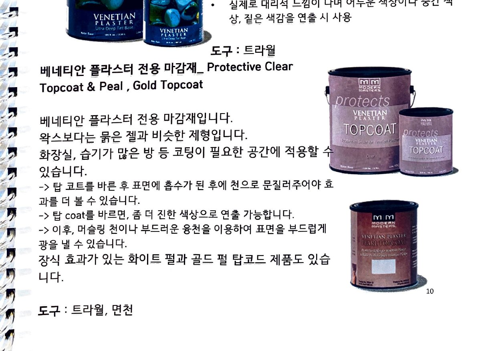
베네티안 플라스터 전용 마감재입니다. 왁스보다는 맑은 젤과 비슷한 제형입니다.
어디에 쓰나? 화장실, 습기가 많은 방 등 코팅이 필요한 공간에 적용할 수 있습니다.
탑 코트를 바른 후 표면에 흡수가 된 후에 천으로 문질러주어야 효과를 더 볼 수 있습니다.
탑 coat를 바르면, 좀 더 진한 색상으로 연출 가능합니다.
이후, 머슬링 천이나 부드러운 융천을 이용하여 표면을 부드럽게 광을 낼 수 있습니다.
장식 효과가 있는 화이트 펄과 골드 펄 탑코드 제품도 있습니다. 기본 Protective Clear Topcoat에 펄 효과를 추가한 것입니다.
도구: 트라월, 면천
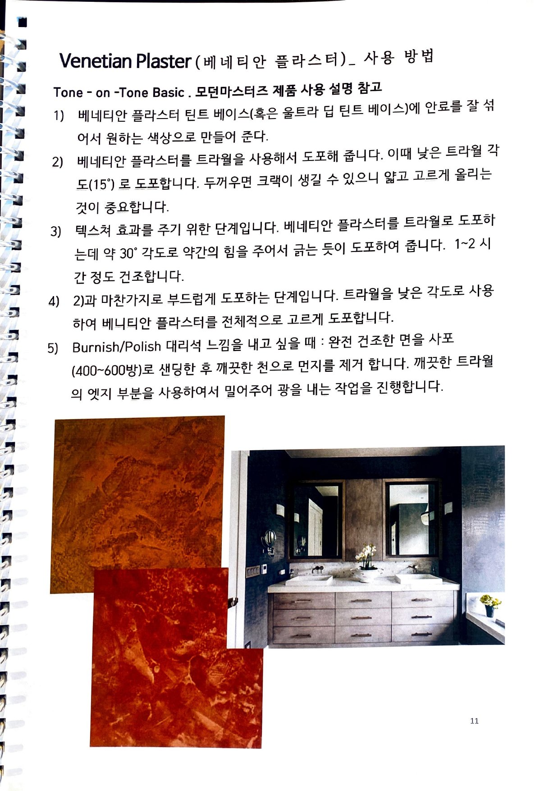
모던마스터즈 제품 사용 설명 참고. Tone-on-Tone 기법은 같은 색상의 농도 차이로 깊이감을 만드는 기본 기법입니다.
금속 가루와 진주 안료가 들어간 플라스터입니다. 일반 플라스터와 달리 은은한 금속 광채가 나며, 다양한 텍스처 연출이 가능합니다. Shimmer Stone(쉬머 스톤)과 Metallic Plaster(메탈릭 플라스터) 두 가지 제품이 있습니다.
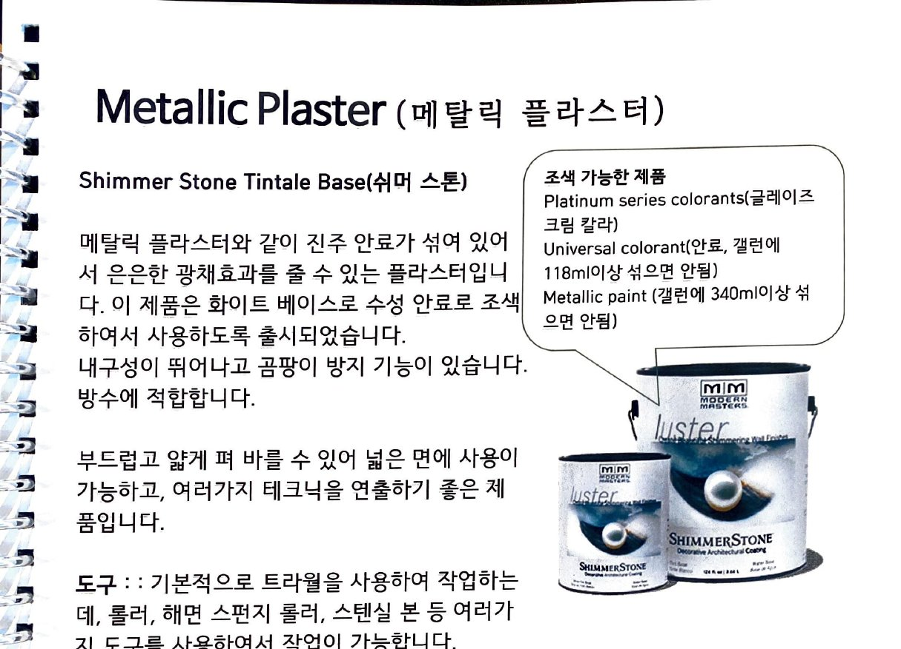
메탈릭 플라스터와 같이 진주 안료가 섞여 있어서 은은한 광채효과를 줄 수 있는 플라스터입니다.
이 제품은 화이트 베이스로 수성 안료로 조색하여 사용하도록 출시되었습니다.
특징: 내구성이 뛰어나고 곰팡이 방지 기능이 있습니다. 방수에 적합합니다.
부드럽고 얇게 펴 바를 수 있어 넓은 면에 사용이 가능하고, 여러가지 테크닉을 연출하기 좋은 제품입니다.
도구: 기본적으로 트라월을 사용하여 작업하는데, 롤러, 해면 스펀지 롤러, 스텐실 본 등 여러가지 도구를 사용하여서 작업이 가능합니다.
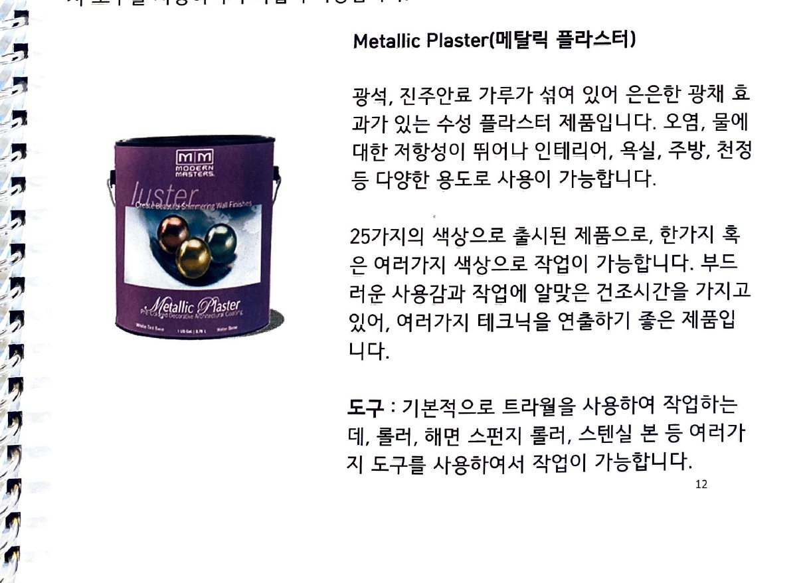
광석, 진주안료 가루가 섞여 있어 은은한 광채 효과와 가 있는 수성 플라스터 제품입니다.
오염, 물에 대한 저항성이 뛰어나 인테리어, 욕실, 주방, 천정 등 다양한 용도로 사용이 가능합니다.
25가지의 색상으로 출시된 제품으로, 한가지 혹은 여러가지 색상으로 작업이 가능합니다.
부드러운 사용감과 작업에 알맞은 건조시간을 가지고 있어, 여러가지 테크닉을 연출하기 좋은 제품입니다.
도구: 기본적으로 트라월을 사용하여 작업하는데, 롤러, 해면 스펀지 롤러, 스텐실 본 등 여러가지 도구를 사용하여서 작업이 가능합니다.
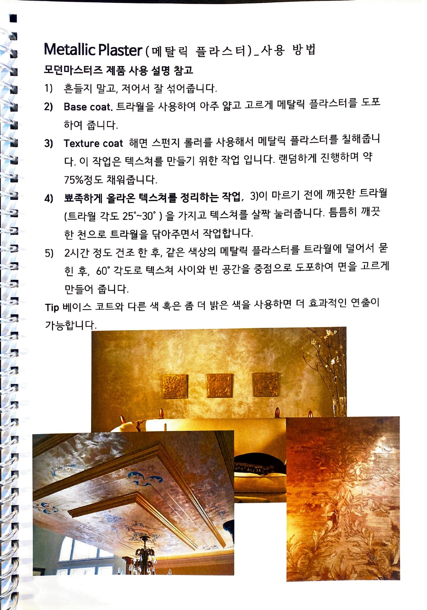
모던마스터즈 제품 사용 설명 참고
장식용 페인팅을 위한 보조 제품군입니다. 글레이즈(건조 지연제), 텍스처 재료, 마감재, 특수 효과 제품 등으로 구성됩니다. 메탈릭 페인트나 플라스터와 함께 사용하여 다양한 페인팅 테크닉을 연출할 수 있습니다.
글레이즈는 페인트의 건조 시간을 늘려주는 지연제입니다. 페인팅 테크닉을 연출할 때 페인트가 너무 빨리 마르면 자연스러운 패턴을 만들 수 없기 때문에, 글레이즈를 섞어 작업 시간을 확보합니다.
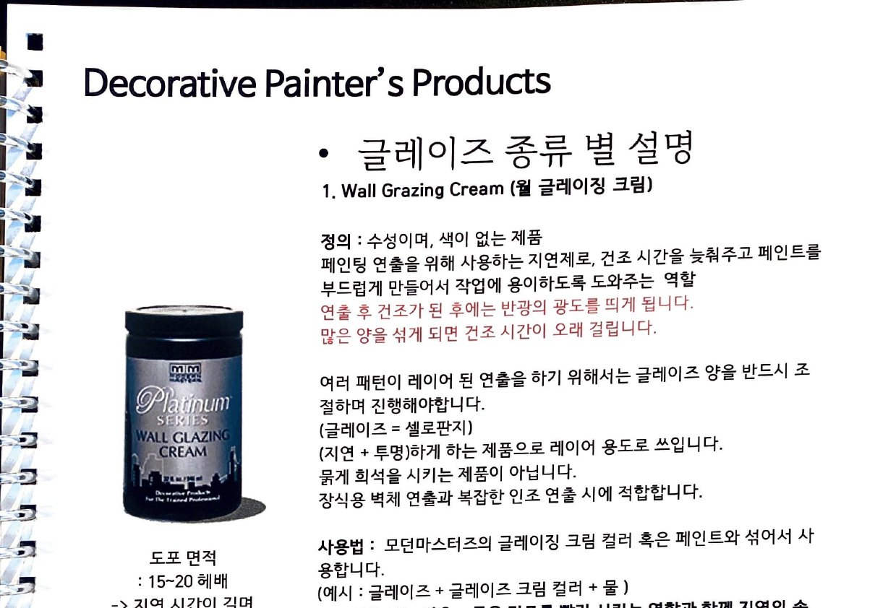
정의: 수성이며, 색이 없는 제품. 페인팅 연출을 위해 사용하는 지연제로, 건조 시간을 늦춰주고 페인트를 부드럽게 만들어서 작업에 용이하도록 도와주는 역할입니다.
마감 후 광도: 반광(Semi-gloss)
도포 면적: 15~20회배. 지연 시간이 길며 투명도가 좋음.
사용법: 모던마스터즈의 글레이징 크림 컬러 혹은 페인트와 섞어서 사용합니다.
(예시: 글레이즈 + 글레이즈 크림 컬러 + 물)
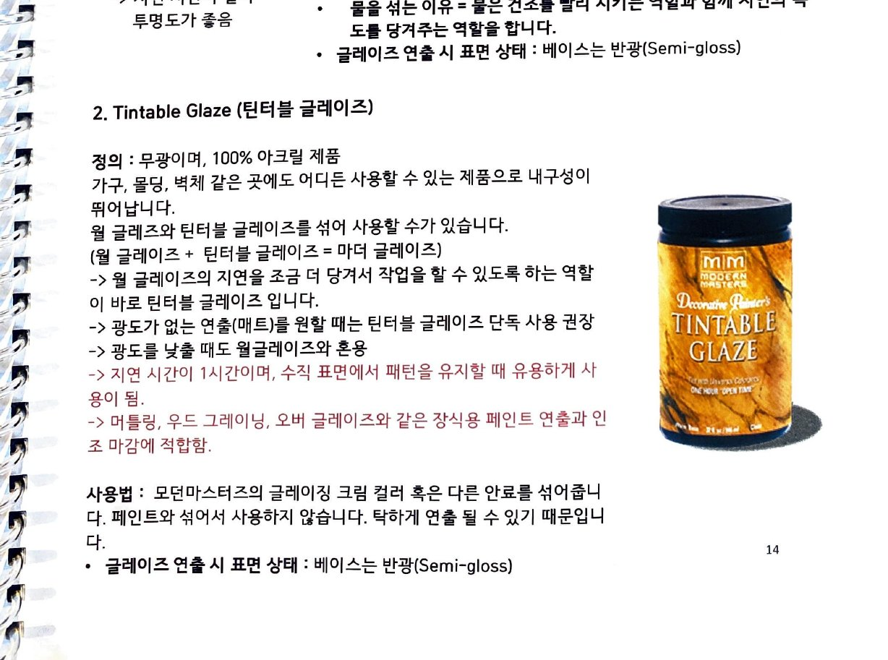
정의: 무광이며, 100% 아크릴 제품. 가구, 몰딩, 벽체 같은 곳에도 어디든 사용할 수 있으므로 내구성이 뛰어남.
지연 시간: 약 1시간. 수직 표면에서 패턴을 유지할 때 유용하게 사용됩니다.
적합한 테크닉: 머틀링, 우드 그레이닝, 오버 글레이즈와 같은 장식용 페인트 연출과 인조 마감에 적합.
사용법: 모던마스터즈의 글레이징 크림 컬러 혹은 다른 안료를 섞어줍니다. 페인트와 섞어서 사용하지 않습니다 (탁하게 연출 될 수 있기 때문).
마감 후 광도: 반광(Semi-gloss)
| 조합 | 효과 |
|---|---|
| 월 글레이즈 + 틴터블 글레이즈 | = "마더 글레이즈" (혼합 사용 가능) |
| 효과 | 월 글레이즈의 지연을 조금 더 당겨서 작업할 수 있도록 하는 역할 |
| 광도 없는 연출(매트) | 틴터블 글레이즈 단독 사용 권장 |
| 광도를 낮출 때 | 월글레이즈에 틴터블 글레이즈를 혼합 |
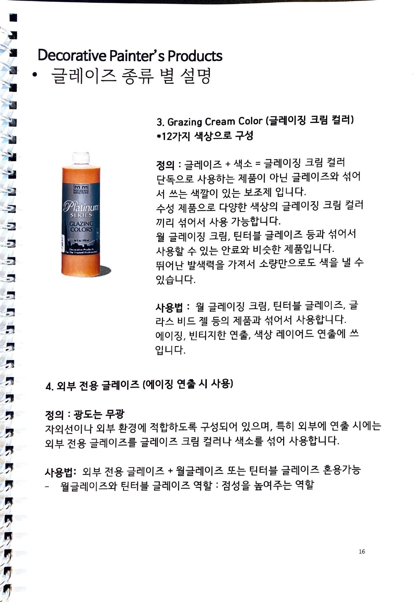
정의: 글레이즈 + 색소 = 글레이징 크림 컬러. 단독으로 사용하는 제품이 아닌, 글레이즈와 섞어서 쓰는 색깔이 있는 보조제입니다.
*12가지 색상으로 구성. 수성 제품으로 다양한 색상의 글레이징 크림 컬러끼리 섞어서 사용 가능합니다.
월 글레이징 크림, 틴터블 글레이즈 등과 섞어서 사용할 수 있는 안료와 비슷한 제품입니다.
뛰어난 발색력을 가져서 소량만으로도 색을 낼 수 있습니다.
사용법: 월 글레이징 크림, 틴터블 글레이즈, 글라스 비드 젤 등의 제품과 섞어서 사용합니다. 에이징, 빈티지한 연출, 색상 레이어드 연출에 씁니다.
광도: 무광
자외선이나 외부 환경에 적합하도록 구성되어 있으며, 특히 외부에 연출 시에는 외부 전용 글레이즈를 글레이즈 크림 컬러나 색소를 섞어 사용합니다.
사용법: 외부 전용 글레이즈 + 월글레이즈 또는 틴터블 글레이즈 혼용 가능. 월글레이즈와 틴터블 글레이즈 역할: 점성을 높여주는 역할.
| 제품 | 광도 | 지연시간 | 핵심 용도 |
|---|---|---|---|
| Wall Glazing Cream | 반광 | 길다 | 기본 글레이즈, 넓은 면 작업 |
| Tintable Glaze | 무광 | ~1시간 | 수직면, 우드그레이닝, 머틀링 |
| Glazing Cream Color | - | - | 색소 보조제 (단독 사용 X) |
| 외부 전용 글레이즈 | 무광 | - | 외부 에이징 연출 |
| Extender for Rolling | 반광 이상 | - | 메탈 페인트 전용 |
| Troweling Gel | 최고(Gloss) | - | 질감 표현, 트라월 작업 |
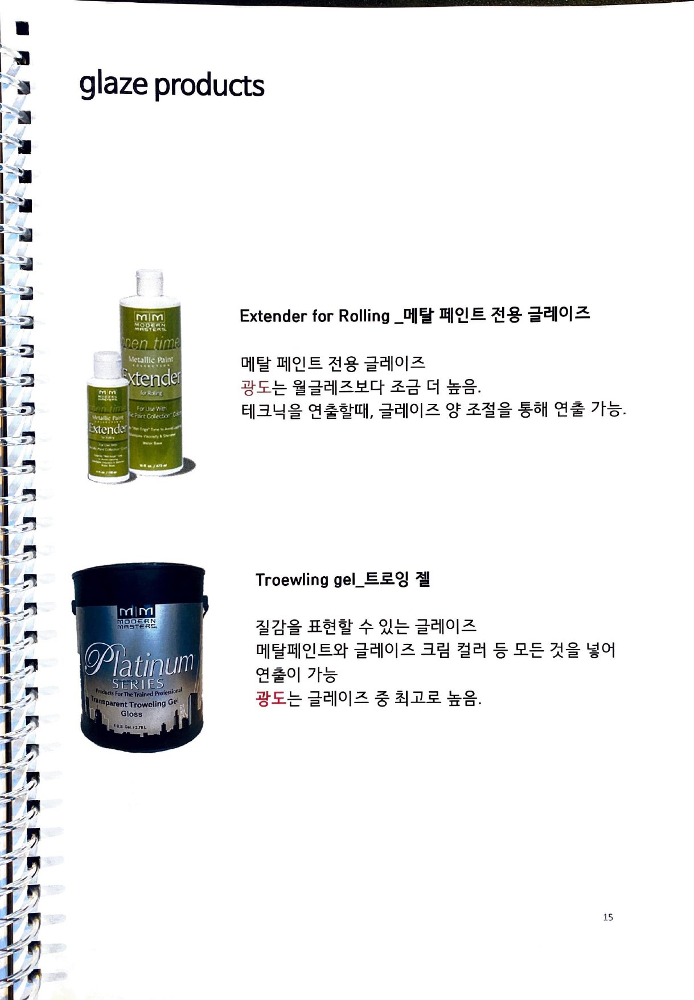
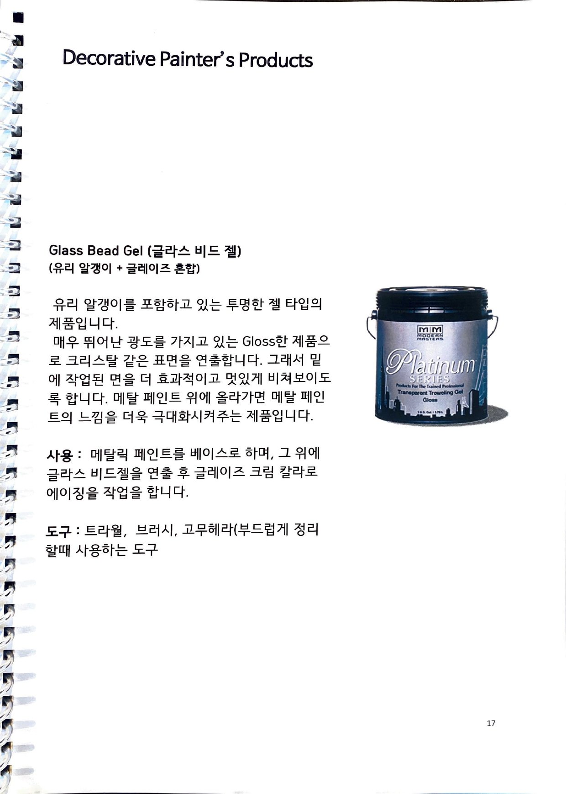
유리 알갱이를 포함하고 있는 투명한 젤 타입의 제품입니다.
매우 뛰어난 광도를 가지고 있는 Gloss한 제품으로 크리스탈 같은 표면을 연출합니다. 밑에 작업된 면을 더 효과적이고 멋있게 비쳐보이도록 합니다.
메탈 페인트 위에 올라가면 메탈 페인트의 느낌을 더욱 극대화시켜주는 제품입니다.
사용: 메탈릭 페인트를 베이스로 하며, 그 위에 글라스 비드젤을 연출 후 글레이즈 크림 칼라로 에이징을 작업을 합니다.
도구: 트라월, 브러시, 고무헤라(부드럽게 정리할때 사용하는 도구)
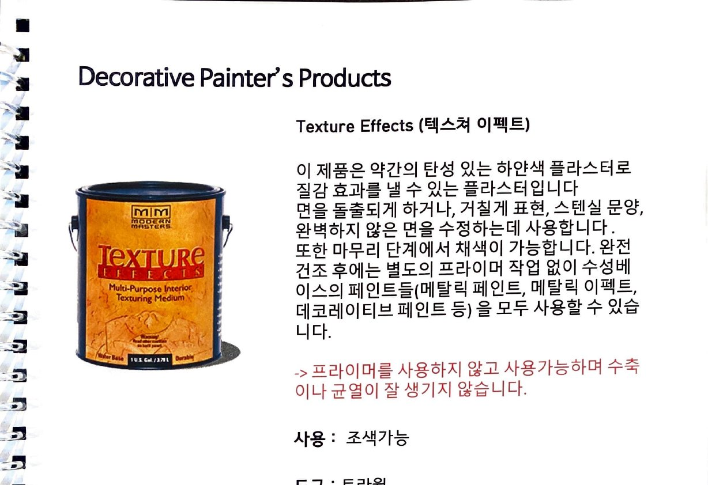
이 제품은 약간의 탄성 있는 하얀색 플라스터로 질감 효과를 낼 수 있는 플라스터입니다.
용도: 면을 돌출되게 하거나, 거칠게 표현, 스텐실 문양, 완벽하지 않은 면을 수정하는데 사용합니다.
또한 마무리 단계에서 채색이 가능합니다. 완전 건조 후에는 별도의 프라이머 작업 없이 수성베이스의 페인트들(메탈릭 페인트, 메탈릭 이펙트, 데코레이티브 페인트 등)을 모두 사용할 수 있습니다.
장점: 프라이머를 사용하지 않고 사용가능하며 수축이나 균열이 잘 생기지 않습니다.
사용: 조색가능
도구: 트라월
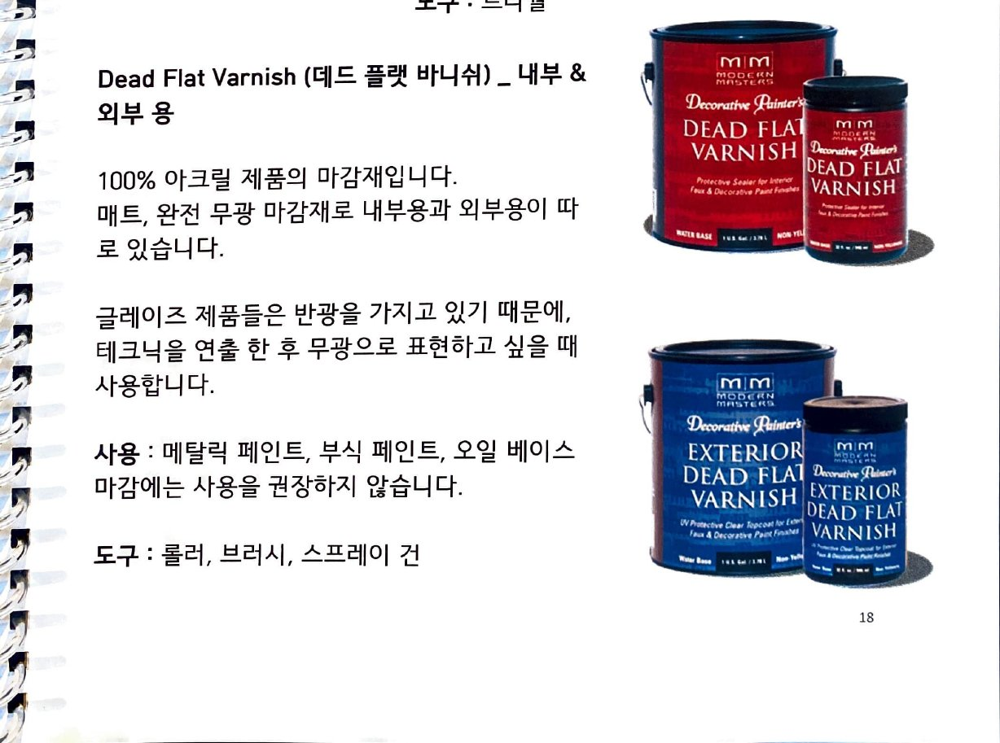
100% 아크릴 제품의 마감재입니다. 매트, 완전 무광 마감재로 내부용과 외부용이 따로 있습니다.
왜 필요한가? 글레이즈 제품들은 반광을 가지고 있기 때문에, 테크닉을 연출 한 후 무광으로 표현하고 싶을 때 사용합니다.
도구: 롤러, 브러시, 스프레이 건
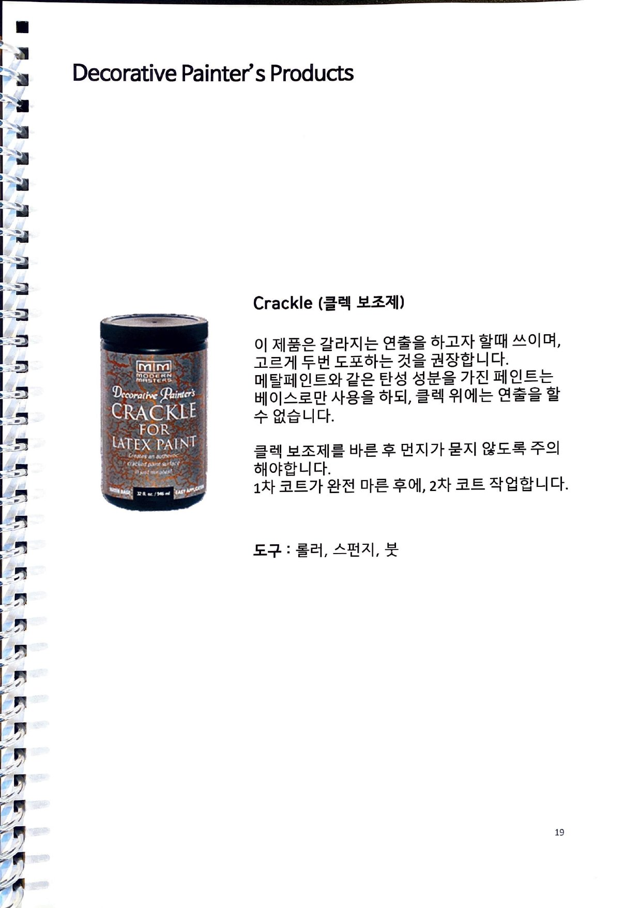
이 제품은 갈라지는 연출을 하고자 할때 씁니다. 오래된 벽면, 빈티지 가구 같은 느낌을 연출할 수 있습니다.
고르게 두번 도포하는 것을 권장합니다.
도구: 롤러, 스펀지, 붓
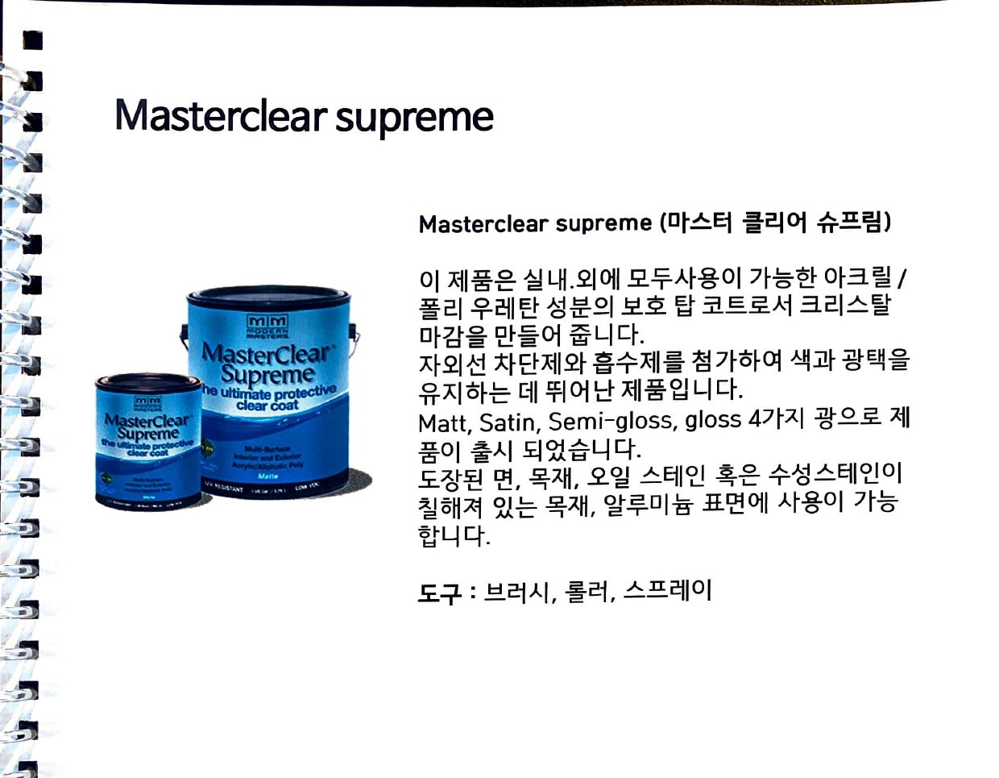
이 제품은 실내·외에 모두사용이 가능한 아크릴 / 폴리 우레탄 성분의 보호 탑 코트로서 크리스탈 마감을 만들어 줍니다.
자외선 차단제와 흡수제를 첨가하여 색과 광택을 유지하는 데 뛰어난 제품입니다.
광도: Matt, Satin, Semi-gloss, Gloss 4가지 광으로 제품이 출시 되었습니다.
적용 가능 표면: 도장된 면, 목재, 오일 스테인 혹은 수성스테인이 칠해져 있는 목재, 알루미늄 표면에 사용이 가능합니다.
도구: 브러시, 롤러, 스프레이
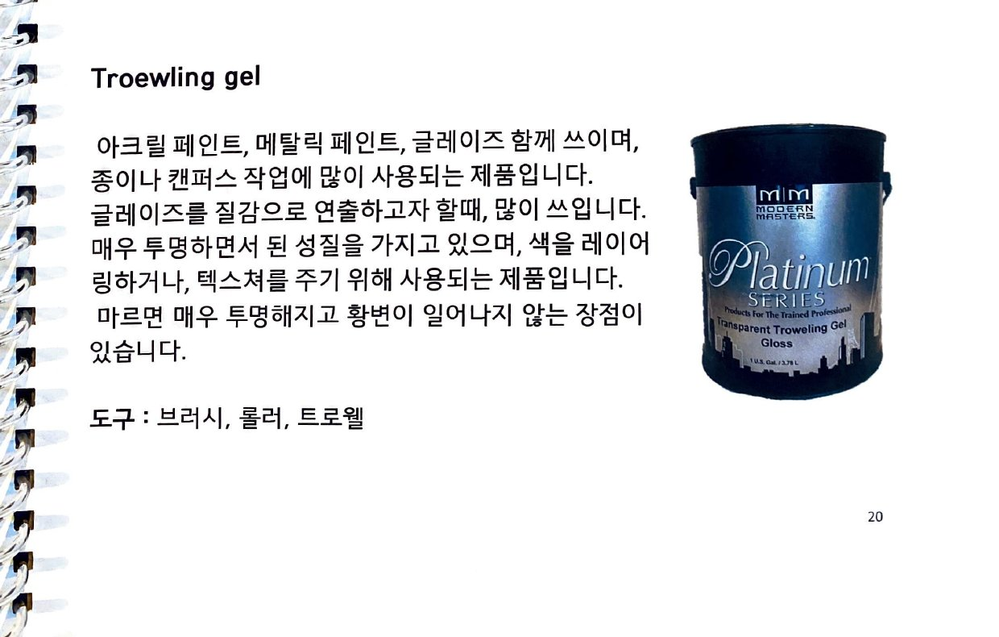
아크릴 페인트, 메탈릭 페인트, 글레이즈 함께 쓰이며, 종이나 캔퍼스 작업에 많이 사용되는 제품입니다.
글레이즈를 질감으로 연출하고자 할때, 많이 쓰입니다.
매우 투명하면서 된 성질을 가지고 있으며, 색을 레이어링하거나, 텍스처를 주기 위해 사용되는 제품입니다.
장점: 마르면 매우 투명해지고 황변이 일어나지 않는 장점이 있습니다.
광도: 글레이즈 중 최고로 높음 (Gloss).
도구: 브러시, 롤러, 트로웰
| 제품 | 브러시 | 롤러 | 스프레이 | 트라월 | 기타 |
|---|---|---|---|---|---|
| 메탈릭 페인트 (Satin/Matte) | O | O (전용) | O | - | 전용 롤러 권장 |
| 메탈릭 페인트 (외부) | O | O | O | - | |
| 부식 페인트 (Iron/Copper/Bronze) | O | O | O | - | |
| 부식액 (Rust Activator) | O | O | - | - | 해면 스펀지 |
| 부식액 (Green/Blue Patina) | O | O | O | - | 해면 스펀지 |
| 베네티안 플라스터 | - | - | - | O (필수) | |
| 메탈릭 플라스터 | - | - | - | O (기본) | 해면 스펀지 롤러, 스텐실 |
| Texture Effects | - | - | - | O | |
| Glass Bead Gel | O | - | - | O | 고무헤라 |
| Crackle | O | O | - | - | 스펀지 |
| 페인트/제품 | 전용 마감재 | 비고 |
|---|---|---|
| 메탈릭 페인트 (내부 Satin) | MasterClear Protective Clear Topcoats | 선택사항 (물 닿는 곳은 필수) |
| 메탈릭 페인트 (내부 Matte) | 사용하지 않음 | 광이 생겨 매트 효과 상실 |
| 메탈릭 페인트 (외부) | 사용하지 않음 | 자체 내구성·UV 차단 내장 |
| 철 부식 페인트 | Permacoat Xtreme | 권장 (외부 녹 방지) |
| 동/청동 부식 페인트 | Permacoat Xtreme | 선택사항 |
| 베네티안 플라스터 | Protective Clear Topcoat / Pearl·Gold | 습기 많은 곳 필수 |
| 글레이즈 테크닉 (무광 원할 때) | Dead Flat Varnish | 반광→무광 변환용 |
| 범용 (목재, 다양한 표면) | MasterClear Supreme | 4가지 광도 선택 가능 |
| 구분 | 철 부식 | 동 부식 |
|---|---|---|
| 부식액 도포 타이밍 | 페인트 완전 건조 후 | 페인트가 살짝 덜 마른 상태에서 |
| 부식액 2회 도포 시 | 1차 부식액 건조 후 2차 도포 | 1차 부식액 건조 전에 2차 도포 |
| 부식 시간 제한 | 12시간 내 부식 작업 완료 | 제한 없음 |
| 마감재 | Permacoat Xtreme 권장 | Permacoat Xtreme 선택 |
| 부식액 이름 | Rust Activator | Green Patina / Blue Patina |
본 자료는 SYATT Faux Painting Art School의 Modern Masters 제품 교육 강의 자료를 기반으로 재구성한 개인 복습용 가이드입니다.